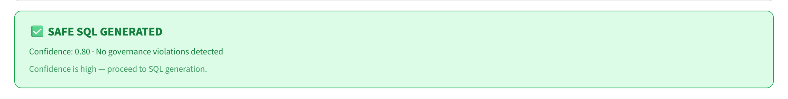

Why Enterprise Text-to-SQL Systems Fail Without Metadata Reasoning
Most discussions of enterprise text-to-SQL focus on whether the LLM can produce correct SQL. This one focuses on a different question: whether the system should attempt generation at all.
This is a design paper, not a deployment report. The system described here is a research prototype built to explore one architectural idea: that deterministic metadata reasoning before LLM generation produces more trustworthy behavior than retrieval-then-generate pipelines. The benchmark evidence is synthetic. The failures it catches are realistic by design, not by observation.
That framing matters because the argument does not depend on a production deployment to be valid. It depends on whether the failure modes it addresses — semantic ambiguity, governance violations, hallucinated joins, missing schema grounding — are real problems in enterprise analytics. They are. Anyone who has worked with a data warehouse at scale has seen at least one of them.
Here’s the architecture, here’s what the benchmark shows, and here’s where it falls short.

The Hidden Failure Modes of Enterprise Text-to-SQL
Enterprise text-to-SQL failures are subtle because many of them still produce syntactically valid SQL. A query can compile, execute, and return data while still being wrong in the ways that matter most to analytical systems. The failure surface is not primarily parser correctness. It is trust.
In this paper, trust-aware refers to system behavior that constrains generation based on explicit metadata grounding, governance validation, and confidence thresholds.
In enterprise environments, several failure modes recur:
- Semantic ambiguity. Terms such as
revenue,customer, oractivecan map to multiple business definitions. Picking one silently is a correctness failure. - Hallucinated joins. Metadata retrieval may surface relevant tables without proving that those tables can be joined safely. A model can be relevant and still be structurally unusable.
- Governance violations. A query may target PCI-tagged models, expose PII columns, or cross domain boundaries that a given role should not access.
- Unsafe warehouse scans. Broad or unrestricted analytical requests can imply extremely large scans, especially on partitioned event tables.
- Insufficient schema grounding. A user term may not exist in the manifest or glossary at all, creating pressure for the model to invent support that does not exist.
These are not edge cases. They are the routine operating conditions of enterprise analytics systems. A text-to-SQL assistant that does not reason over them explicitly may appear useful in simplified environments while remaining operationally unsafe in practice.
Why Retrieval Alone Is Not Reasoning
Modern RAG pipelines solve one real problem well: they retrieve candidate context. In the text-to-SQL setting, that usually means table descriptions, column metadata, lineage hints, or prior query examples. Retrieval is necessary, but it is not sufficient.
The distinction matters because the safety and correctness decision is not reducible to semantic similarity:
- Retrieving
fct_ordersdoes not resolve whetherrevenuemeansrevenue_grossorrevenue_net. - Retrieving both
dim_customerandsupport_ticketsdoes not prove there is a clean join path between them. - Retrieving
payment_eventsbecause it lexically matchespaymentsdoes not override governance tags such aspci. - Retrieving a large partitioned table does not justify an unrestricted historical scan without a time filter.
Retrieval answers the question: What metadata is nearby?
Enterprise reasoning must answer a different set of questions:
- Which candidate interpretation is semantically justified?
- Is there a reliable join path?
- Is the query safe for this user and this dataset?
- Is confidence high enough to proceed?
- Should the system generate SQL at all?
That difference is the thesis of this architecture. Retrieval is one signal. It is not the system’s decision procedure.
| Capability | Typical RAG SQL | This System |
|---|---|---|
| Metadata retrieval | Yes | Yes |
| Join validation | Weak or implicit | Deterministic and graph-backed |
| Governance validation | Limited or downstream | Explicit pre-generation gate |
| Semantic ambiguity handling | Often prompt-based | Structured refusal taxonomy |
| Confidence propagation | Minimal | Multi-stage weakest-link scoring |
| Unsafe query blocking | Rare | Built in before generation |
Designing a Trust-Aware Metadata Reasoning System
The system described here is built around a deterministic metadata reasoning layer that sits between the user query and final SQL generation. The language model, when used, receives only a constrained execution plan. It does not receive the full burden of deciding intent, join validity, governance safety, or confidence thresholds by itself.
Deterministic planning constrains critical trust decisions to explicit system logic rather than relying entirely on probabilistic prompt behavior.
SQL generation should be the final translation step, not the place where trust-critical reasoning first occurs.
This structure is intentionally constrained. It does not attempt to turn the system into a general-purpose agent, a multi-tool framework, or a dashboard-first application. The emphasis is on trustworthy decision-making.
Deterministic Planning Before LLM Generation
The reasoning pipeline is organized as a sequence of deterministic stages:
- Intent Extraction. The system classifies the query intent, such as lookup, segmentation, trend, or aggregation, and extracts basic temporal cues.
- Metadata Retrieval. Candidate models are ranked using composite retrieval rather than raw vector similarity alone.
- Join Path Reasoning. The graph layer searches for lineage-backed paths between candidate models and scores them using foreign-key strength, proximity, and lexical column similarity.
- Ambiguity Detection. Competing metric definitions, candidate columns, and weakly separated join alternatives trigger clarification or refusal.
- Governance Validation. PII, RBAC, scan risk, and unsafe patterns are evaluated before any generation step proceeds.
- Confidence Propagation. Retrieval, join, governance, completeness, and intent signals are combined so the weakest trustworthy component governs the decision.
- SQL Generation or Refusal. Only after the prior stages succeed does the system emit SQL.
Each stage exists because it answers a distinct systems question. This is not redundancy. It is decomposition. The point is to avoid collapsing every uncertainty into a single prompt and hoping the model resolves it correctly.
One concrete enterprise case makes the join-reasoning requirement clearer. Consider the request customers with failed payments after support escalation. This is not a single-table lookup. It requires traversing multiple business domains: support_tickets → customer_master → payment_events. To answer safely, the system must verify that a lineage-backed join path actually exists, that the customer identifiers are compatible across the models, that there are not multiple competing routes through intermediate entities, and that governance restrictions on payment data do not block access.
Honest Refusal as a First-Class System Behavior
One of the strongest differences between this system and generic text-to-SQL pipelines is that refusal is treated as a product behavior, not as an embarrassing exception.
Consider a query such as show revenue by region. If revenue maps to both revenue_gross and revenue_net, the system should not “do its best.” It should refuse cleanly and explain the ambiguity. In analytical systems, silently selecting the wrong metric is frequently worse than returning no SQL.
The same logic applies when schema grounding fails. If a request such as show me xyz_metric_zz99 does not map to the glossary or graph, the correct response is INSUFFICIENT_SCHEMA. This is not a weakness to hide. It is the right operating behavior when the metadata evidence is missing.
The implemented failure taxonomy currently distinguishes GOVERNANCE_BLOCKED, UNSAFE_QUERY, INSUFFICIENT_SCHEMA, WEAK_JOIN, SEMANTIC_CONFLICT, AMBIGUOUS_JOIN, TEMPORAL_AMBIGUITY, and LOW_CONFIDENCE. That taxonomy gives the system a vocabulary for why generation stopped.
Confidence Propagation Across the Planning Pipeline
The system does not treat confidence as a single opaque scalar attached after the fact. Confidence is propagated across several planning signals: retrieval quality, join-path confidence, governance clearance, metadata completeness, and intent clarity.
The current implementation uses a weakest-link model in which the minimum trusted component, adjusted by intent clarity, governs the final confidence. That design is intentionally conservative. A query with excellent semantic retrieval but poor join confidence should not receive a high final score. Likewise, a governance-hard-blocked query should not be rescued by strong lexical similarity.
Confidence should describe whether the plan is trustworthy, not whether the language model sounds fluent.
In the current demo environment, this also exposed a useful weakness: some benign single-entity queries were being refused because the default non-embedding retrieval fallback was too weak. Improving that fallback increased benchmark accuracy and allowed the interface to surface at least one genuine SQL-generation path. That outcome is exactly what a benchmark should reveal.
Governance-Aware SQL Orchestration
Enterprise analytics systems must reason about more than semantics. They also need policy awareness.
The governance layer in this architecture evaluates three categories:
- PII and restricted data. Models and columns tagged as PCI, restricted, confidential, or hard PII create immediate blocks.
- Role-based access. Candidate models are compared against the user’s allowed domains and blocked tags.
- Query cost risk. Estimated scan volume and unsafe patterns, such as unrestricted historical scans on large partitioned tables, are surfaced and may block execution.
This matters because enterprise risk is not only about what SQL says. It is also about what the SQL would do. A request such as show all payments is not merely a retrieval problem. It is a governance problem. In the current synthetic environment, payment_events is PCI-tagged and carries high scan cost. The correct system behavior is to block before generation, not to generate and hope downstream controls catch the issue later.
Evaluation and Failure Taxonomy
The architecture claims several things: that it can refuse honestly, block unsafe requests, classify failures explicitly, and propagate confidence through deterministic planning. Those claims need evidence.
To make the behavior measurable, the repository includes a grouped benchmark runner that evaluates five fixture categories: answerable queries, ambiguity cases, hallucination resistance via missing-schema queries, governance violations, and unsafe operational queries.
| Metric | Score |
|---|---|
| Overall accuracy | 0.82 |
| Refusal precision | 0.82 |
| Refusal recall | 0.97 |
| Failure-type F1 | 0.89 |
| Answerable accuracy | 0.33 |
| Ambiguity accuracy | 1.00 |
| Hallucination accuracy | 0.88 |
| Governance recall | 1.00 |
| Unsafe-query recall | 1.00 |
These results tell a more useful story than a polished demo alone could: governance and unsafe-query behavior are already strong, ambiguity handling is highly reliable on the current fixture set, and answerable-query recovery is improving but still incomplete.
The benchmark suite is synthetic and the fixtures were designed by the same author as the system. Governance and unsafe-query recall of 1.00 on self-authored tests do not prove production readiness; they show that the system’s trust behaviors are explicit enough to be measured, challenged, and improved over time.
The benchmark intentionally prioritizes trustworthy refusal behavior over unconstrained SQL generation. From a systems perspective, that is a defensible trade. It is better for the system to be conservatively correct than fluently wrong. The 0.33 answerable-query accuracy is therefore the number that matters most for honest calibration.
The current implementation also has clear limitations. It depends heavily on metadata quality, lineage completeness, and governance tagging accuracy. Sparse or inconsistent metadata reduces retrieval confidence, weakens join validation, and increases refusal rates even when a human analyst might be able to recover the intent manually.
Rethinking Enterprise AI Safety for Analytics Systems
The main architectural insight of this work is not about prompts, embeddings, or front-end presentation. It is about where reasoning should happen.
If the system leaves semantic disambiguation, join validation, governance judgment, and confidence thresholding to the final SQL generation step, it has already made the most important design mistake. At that point the model is being asked to invent the trust boundary instead of respecting one.
The more useful question is not: Can the LLM generate SQL?
The more important question is: Should the system generate SQL at all?
That shift changes the design space. It leads naturally toward explicit metadata grounding, deterministic planning, honest refusal, confidence propagation, and governance-first orchestration. It also produces a system that can be evaluated as a reasoning pipeline rather than a demo of prompt fluency.
This prototype does not answer that question completely. What it does is make the question concrete, implement one approach to it, and measure the result honestly.
For practitioners, that is the key takeaway. In enterprise analytics, the quality of the system is not measured only by how often it returns SQL. It is measured by how reliably it knows when not to.